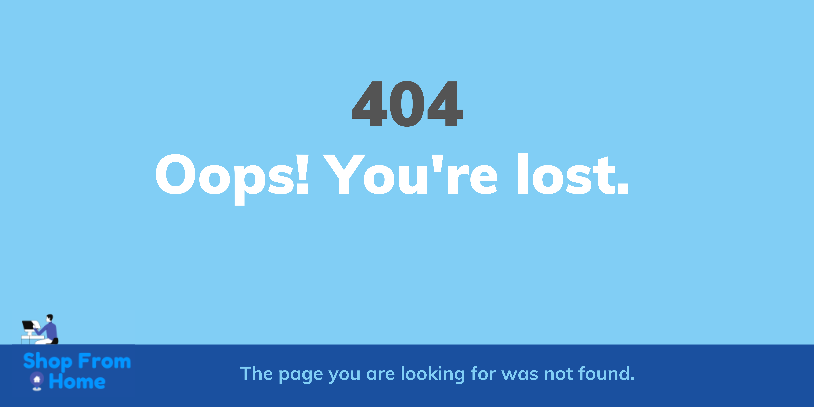

<div class="mt-5 error-box">
    
</div>

<div class="row-lg-12 text-center mt-5">
    <button mat-fab 
            routerLink="/" 
            aria-label="icon button with a home icon"
            matTooltip="Back to Home"
            matTooltipPosition="below"
            matTooltipShowDelay="100">
        <span class="fa fa-home fa-2x"></span>
    </button>

    <button class="ml-4" 
            mat-fab 
            (click)="back()" 
            aria-label="icon button with a back icon"
            matTooltip="Previous Page"
            matTooltipPosition="below"
            matTooltipShowDelay="100">
        <span class="fa fa-arrow-left fa-2x"></span>
    </button>
</div>